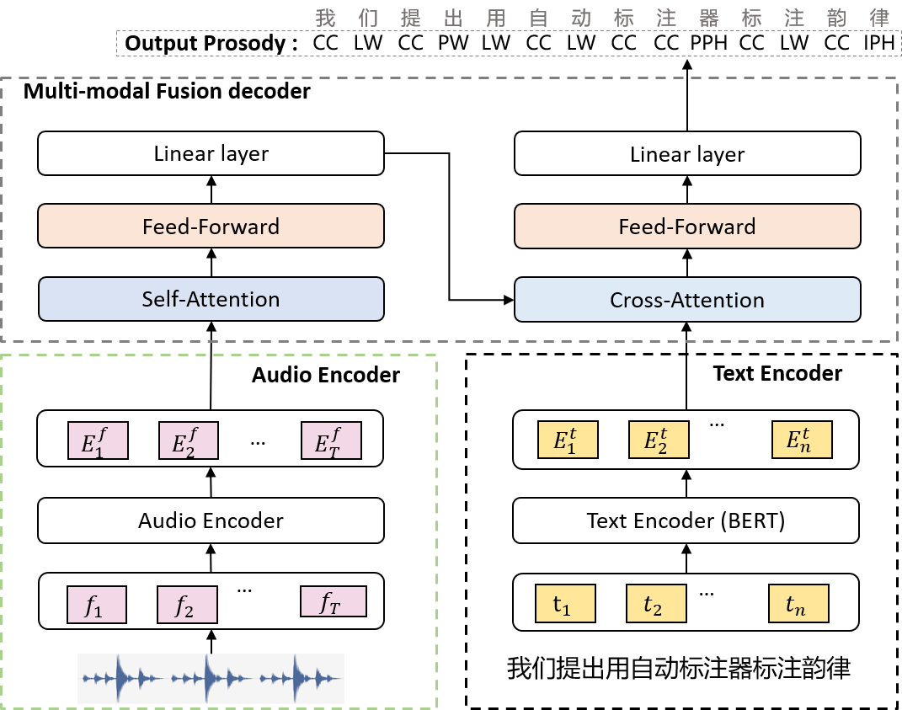
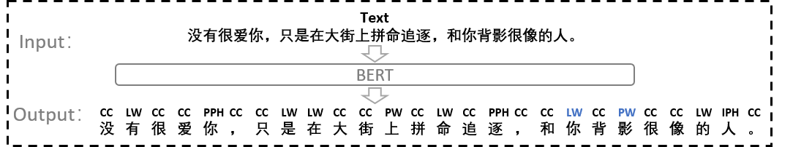
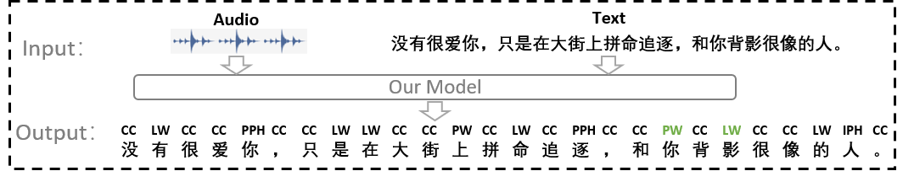

Automatic Prosody Annotation with Pre-Trained Text-Speech Model
Authors: Ziqian Dai, Jianwei Yu, Yan Wang, Nuo Chen, Yanyao Bian, Guangzhi Li,Deng Cai, Dong Yu
Authors: Ziqian Dai, Jianwei Yu, Yan Wang, Nuo Chen, Yanyao Bian, Guangzhi Li,Deng Cai, Dong Yu
Abstract: Prosodic boundary plays an important role in text-to-speech synthesis (TTS) in terms of naturalness and readability. However, the acquisition of prosodic boundary labels relies on manual annotation, which is costly and time-consuming. In this paper, we propose to automatically extract prosodic boundary labels from text-audio data via a neural text-speech model with pre-trained audio encoders. This model is pre-trained on text and speech data separately and jointly fine-tuned on TTS data in a triplet format: {speech, text, prosody}. The experimental results on both automatic evaluation and human evaluation demonstrate that: 1) the proposed text-speech prosody annotation framework significantly outperforms text-only baselines; 2) the quality of automatic prosodic boundary annotations is comparable to human annotations; 3) TTS systems trained with model-annotated boundaries are slightly better than systems that use manual ones.
The proposed framework consists of three main components: a text encoder, an audio encoder, and a multi-modal fusion decoder.

The hierarchical prosody annotation adopted in this work categorizes the prosodic boundaries of Mandarin speech into five levels, which from low to high are Character (CC), Lexicon Word (LW), Prosodic Word (PW), Prosodic Phrase (PPH) and Intonational Phrase (IPH). Prosodic Word (PW), Prosodic Phrase (PPH) and Intonational Phrase (IPH) correspond to three different lengths of pause in speech from short to long. Lexicon Word (LW) indicates syntactic boundary between words, and Chinese Character (CC) is the smallest unit of Chinese.
We conduct three different kinds of audio encoders in our model, which are CNN-Char, Conformer-Char and Conformer-PPG. We take BERT as our baseline, which shares the same architecture with the text encoder in our model, and only takes text as input.
Suppose the input audio and text is as follows.
Raw Audio:
Raw Text: 没有很爱你，只是在大街上拼命追逐，和你背影很像的人。
Here are the examples of manual annotation, BERT and our model:
Manual Annotation:
BERT:

Our model(with Conformer-PPG as audio encoder):
